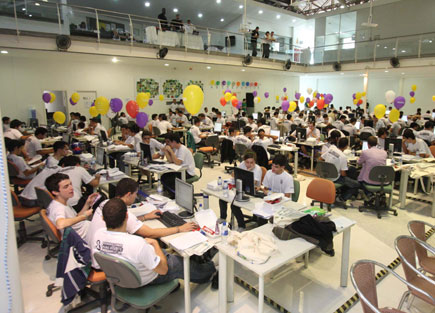

Maratonas de Programação(){
Mundo Acadêmico
Por: Andrêssa Finzi

Maratona de programação da Algar
Maratona de Programação é um evento da Sociedade Brasileira de Computação que existe desde o ano de 1996 e são uma grande oportunidade para alunos de graduação e início de pós-graduação na área de Computação e afins (Ciência da Computação, Engenharia de Computação, Sistemas de Informação, Matemática, etc). As vantagens de participar de uma Maratona são: trocar experiências com os outros participantes, enfrentar situações desafiadoras onde é necessário resolver problemas sob pressão, promover nos alunos a criatividade e a capacidade de trabalhar em equipe, buscar novas soluções de software, além de criar oportunidades para a inserção do estudante no mercado de trabalho onde várias empresas valorizam esse tipo de atividade, pois os estudantes que participam de maratonas têm as qualidades citadas acima e com isso é possível aproximar grandes empresas e jovens profissionais. Outro aspecto importante para a participação em maratonas são os prêmios, que variam entre prêmios tecnológicos como celulares, notebooks, HD’s, prêmios em dinheiro ou prêmios simbólicos.
As linguagens de programação usadas nas maratonas dependem de cada organização do evento, mas geralmente são as linguagens mais usuais. Comumente, os times são compostos por três alunos que devem resolver o número máximo de problemas de diferentes níveis que são entregues no início da competição no menor tempo possível. A duração de uma maratona também depende da organização, entretanto a duração média é de cinco horas. Geralmente, a cada problema resolvido é dado ao time um balão e quando a resolução está errada eles recebem uma penalidade de tempo. As resoluções são aceitas ou rejeitadas por um júri especializado. Em algumas maratonas é possível levar materiais impressos como livros, manuais, entre outros. Algumas instituições oferecem cursos preparatórios para quem deseja participar, quem estiver interessado fique atento.
Algumas maratonas de programação regionais e nacionais são:
Referências:
SBC
Correio de Uberlândia
}